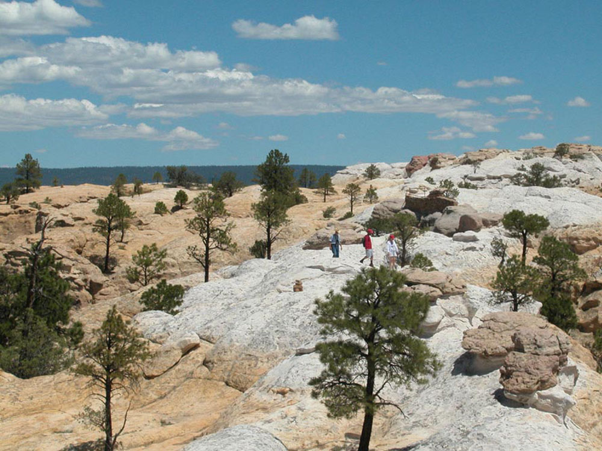
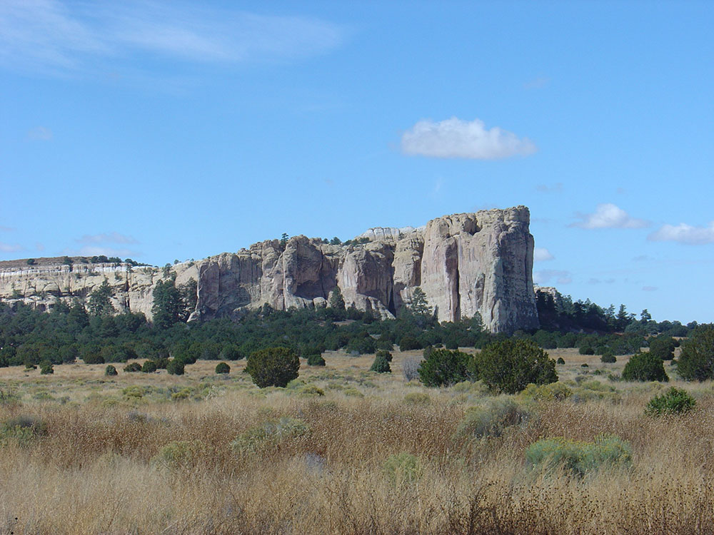
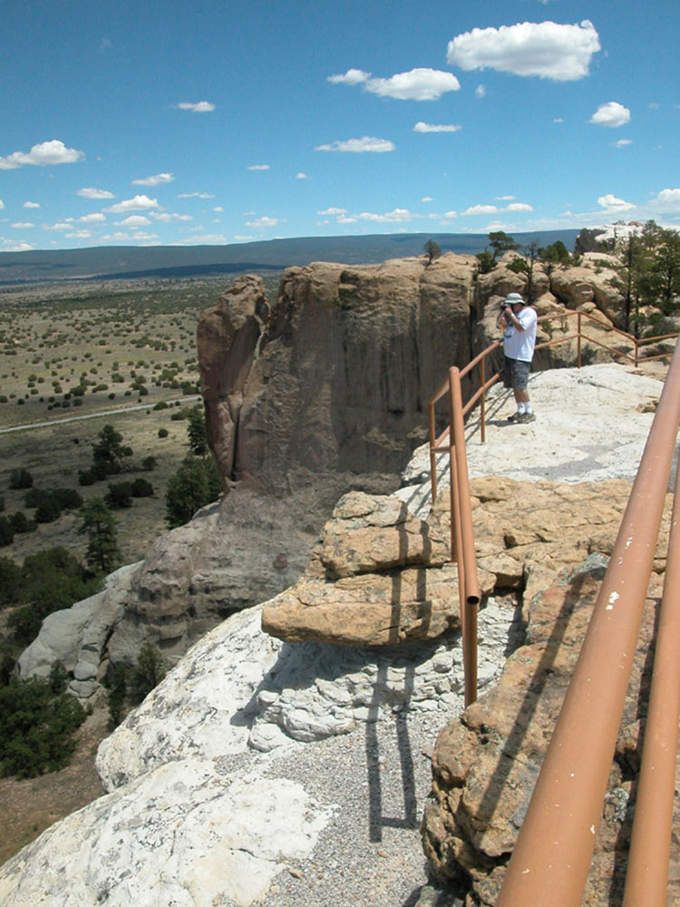

Monument in, New Mexico, preserving the remains of a large prehistoric pueblo atop a great sandstone promontory with a pool of water at its base, where many centuries of explorers and travelers left historic inscriptions that survive today
General Information
Trails: 9am to 4pm (last entry)
Closed Thanksgiving Day, Christmas Day, and New Year’s Day
How to Get There
From Grants (43 mi): Take Interstate 40 west to exit 81, then drive south on NM-53 for approximately 42 miles to reach El Morro National Monument.
Overview
El Morro National Monument ("the headland") protects a 200-foot sandstone bluff and its reliable pool of rainwater in the high desert of west-central New Mexico. For centuries the pool made this a vital stop on the trail between the Zuni Pueblo and the Rio Grande valley, and travelers left their marks on the rock now known as Inscription Rock. More than 2,000 petroglyphs, Spanish inscriptions and American names are carved into the cliff, including the 1605 signature of Spanish governor Juan de Oñate, and the mesa top holds the ruins of Atsinna Pueblo. President Theodore Roosevelt proclaimed El Morro a national monument in 1906, making it one of the first in the country. Visitors come to read the carved history, hike to the ancient pueblo and enjoy quiet scenery and dark night skies.
Access
The monument is on NM-53 in Cibola County, about 43 miles southwest of Grants and roughly 1.5 hours from Gallup and 2.5 hours from Albuquerque. Almost all visitors arrive by car, following I-40 to exit 81 and driving south on paved NM-53 through the El Malpais area and the Ramah region. The drive is scenic and rural with few services, so fuel up in Grants or Gallup. Parking is at the visitor center, and the main trails begin right behind it.
Seasons
The monument is open year-round, with spring and fall providing the most comfortable weather for walking the bluff trails. Summer days can be hot with afternoon thunderstorms, so mornings are best. Winters are cold, and snow and ice can make the Headland Trail slippery or close it temporarily. The pool is fullest in late winter and spring and after summer storms, and it can dry up in a dry season.
Things to Do
Read Centuries of Travelers' Messages on Inscription Rock
El Morro National Monument is a combined natural landmark and historical register. The sandstone cliff and the water at its base drew Ancestral Puebloans, Spanish explorers, soldiers and American emigrants, many of whom carved their names and dates into the stone.
View the Inscriptions and Petroglyphs
The short Inscription Trail leads along the base of the bluff to the main panels, including the earliest Spanish inscriptions and older petroglyphs made by Ancestral Puebloan people. The carvings span hundreds of years and give a feel for the human traffic that passed here.
Visit the Waterhole at the Base of the Bluff
The natural pool at the foot of the cliff gathered rain and snowmelt year-round and drew travelers for over a thousand years. Seeing it today helps explain why El Morro was such an important stopping point in a dry landscape.
Hike to Atsinna Pueblo on the Mesa Top
The Headland Trail climbs to the top of the bluff, where the partly excavated ruins of Atsinna Pueblo once held hundreds of rooms. The mesa top also offers wide views of the surrounding badlands, forests and the El Malpais lava flows.
Enjoy the Scenery and Night Skies
The sandstone cliff changes color through the day, and the monument's remote location makes it a good place to see stars.
Top Trails
Inscription Trail
Length: Approximately 0.5 miles loop
Elevation Gain: Minimal
Difficulty: Easy
This paved trail passes the pool and the main concentration of inscriptions and petroglyphs. It is the best option for visitors with limited time.
Headland Trail
Length: Approximately 2 miles round trip
Elevation Gain: Moderate
Difficulty: Moderate
This trail climbs stone steps and slickrock to the top of the bluff and the ruins of Atsinna Pueblo, then loops back around the mesa. The views from the top are the main reward.
Visitor Centers
The El Morro Visitor Center is the starting point for all trails and has a small museum with exhibits on the inscriptions, the pool, the Ancestral Puebloan and Zuni history of the area and the Spanish and American travelers who followed. It also has a bookstore, restrooms, drinking water and rangers who can provide current trail information. The center is closed on Thanksgiving, Christmas and New Year's Day, and the Headland Trail may close earlier than the center, so check the National Park Service website for current hours. Admission is free.
Camping and Lodging
The monument has a small campground with a limited number of primitive sites, with restrooms but no hookups and limited water, and it is open year-round. There is no lodging in the monument. Hotels, motels and restaurants are in Grants, about an hour away, and in Gallup, about 1.5 hours away. A few rural lodging options and trading posts are also found in the villages along NM-53, such as Ramah. Albuquerque offers the widest selection, about 2.5 hours east. Check each property's website for current availability.
With its oasis-like source of water, El Morro served as a stopping place for numerous travelers through the otherwise arid and desolate region, many of whom left signatures, names, dates, and stories of their treks in the walls of the sandstone cliff. While some of the inscriptions are fading, there are still many that can be seen today, with some dating to the 17th century. The oldest historic inscription at El Morro, left by Juan de Oñate, the first Spanish governor of the colony of Santa Fe de Nuevo México, is dated April 16, 1605. Among the Anglo-American emigrants who left their names there in 1858 were several members of the Rose-Baley Party, including Leonard Rose and John Udell. Nearby petroglyphs and carvings made by the Ancestral Puebloans were inscribed centuries before Europeans arrived. In 1906, U.S. federal law prohibited further carving on the cliffs.
El Morro was designated a national monument by President Theodore Roosevelt on December 8, 1906, and was added to the National Register of Historic Places in 1966. Today the site is managed by the National Park Service. The many inscription panels, water pool, pueblo ruins, and the top of the promontory are all accessible via park trails. El Morro is one of many prehistoric sites on the Trails of the Ancients Byway, a designated New Mexico Scenic Byway. In December 2019, the International Dark Sky Association certified El Morro as an International Dark Sky Park, recognizing its preservation of not only the historic inscriptions but also its natural night sky.
This article uses material from the Wikipedia article "Bandelier National Monument", which is released under the Creative Commons Attribution-Share-Alike License 3.0 Additional information from the National Park Service.
Featured Trails
Image Placeholder
Inscription Rock Trail
difficulty: Easy
A short, paved loop leading past historic carvings, petroglyphs, and the natural pool at the base of the bluff.
Image Placeholder
Headland Trail
difficulty: Moderate
A loop trail that climbs to the top of El Morro, offering scenic views and access to the Atsinna Pueblo ruins.
Image Placeholder
Atsinna Pueblo Spur
difficulty: Moderate
A short spur leading to the remains of a large ancestral Puebloan village atop the bluff.
Image Placeholder
Pool Overlook Path
Difficulty: Easy
A short accessible path to views of the historic water pool that sustained travelers for centuries.




